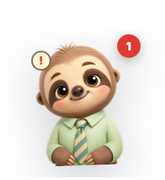
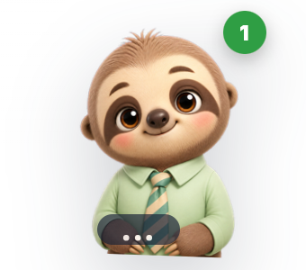
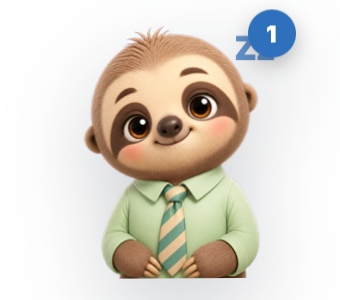

进度分散，难以及时掌握
终端、编辑器、对话窗口同时打开时，很难快速判断哪些任务还在跑，哪些已经停下。
树懒守望是一款本地优先的 macOS 桌面悬浮助手。它把 ChatGPT Desktop、Claude Code、Codex CLI、Qoder、WorkBuddy 等 AI 工具的状态收在桌边，用树懒桌宠、数字角标和气泡列表提醒你：谁还在跑，谁在等你回来。
ChatGPT、Claude Code、Codex CLI、Qoder 和 WorkBuddy 常常分散在不同窗口。你转去写文档、查资料或开会时，最难发现的不是进度慢，而是某个会话已经停在确认、选择或查看结果的位置。
终端、编辑器、对话窗口同时打开时，很难快速判断哪些任务还在跑，哪些已经停下。
会话可能已经停在确认、选择或查看结果的位置，但你正在处理别的事，不一定能及时注意到。
为了看进度而长期露出终端、对话和输出，会占屏幕，也不适合共享屏幕或开放办公场景。
当前稳定体验聚焦 macOS 悬浮 `.app`，Windows 轻量入口保留为预览路径。它不替你做决定，也不展示对话正文，只把多个会话的状态放在桌面边角。
树懒默认停在桌面边角，用颜色和角标轻轻提示状态变化，不把大块信息压到当前工作上。
待处理、进行中、空闲三种状态配合数量角标，让你快速判断有没有需要回看的会话。
点击某条会话气泡后，会尝试回到对应的 ChatGPT、终端、IDE、Qoder 或 WorkBuddy 窗口；能否精确定位取决于系统权限和窗口信息。
当前已发布并验收 macOS 13+ Apple Silicon 用户包；Windows 轻量入口作为 portable 包内的预览路径保留。
你能看到状态、数量和对应会话，也可以尝试点气泡回到原窗口；右键菜单只保留外观、隐藏 Pet 和退出程序。它不是任务看板，也不会把对话内容搬到桌面上。
树懒守望只保留待处理、进行中、空闲三种提示。你不用读日志，也不用展开对话正文。

有会话可能需要你确认、继续或查看结果，红色提示优先出现。

会话仍在执行、生成或等待工具结果，绿色提示表示可以先让它继续跑。

当前会话暂时没有明显动作，可能已经完成、已查看，或暂时不需要处理。
树懒守望只提醒你“什么时候该回来看”，不接管 AI 工作，也不复制完整对话或命令输出。
v0.2.1 已发布并完成 GitHub 回下载与首次打开验收。macOS 13+ Apple Silicon 用户可直接下载单 App 用户包；Web/CLI 集成和 Windows 轻量预览使用 portable 包。